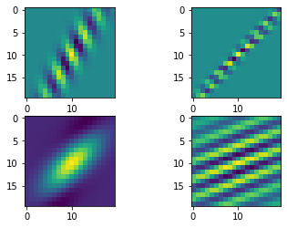
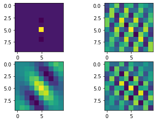
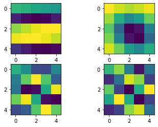
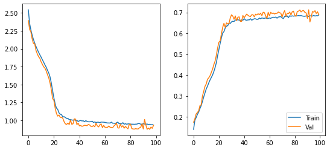
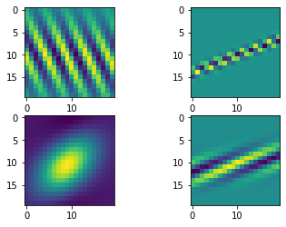
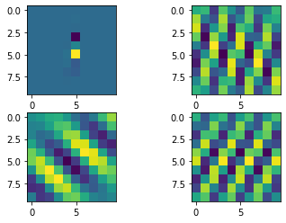
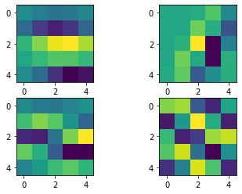

import numpy as np
import matplotlib.pyplot as plt
from einops import rearrange, repeat
import tensorflow as tf
from tensorflow.keras import layers
from tensorflow.keras.datasets import mnist
from flayers.layers import RandomGaborMultiple Random Gabor experiment
In this quick experiment we will be training an MNIST classifier using multiple
RandomGabor layers followed by ReLU non-linearities. At the same time, the size of the Gabor filters is reduced after each pooling operation.
Library importing
Data loading
We will be using MNIST for a simple and quick test.
(X_train, Y_train), (X_test, Y_test) = mnist.load_data()
X_train = repeat(X_train, "b h w -> b h w c", c=1)/255.0
X_test = repeat(X_test, "b h w -> b h w c", c=1)/255.0
X_train.shape, Y_train.shape, X_test.shape, Y_test.shape((60000, 28, 28, 1), (60000,), (10000, 28, 28, 1), (10000,))Definition of simple model
model = tf.keras.Sequential([
RandomGabor(n_gabors=4, size=20, input_shape=(28,28,1)),
layers.ReLU(),
layers.MaxPool2D(2),
RandomGabor(n_gabors=4, size=10),
layers.ReLU(),
layers.MaxPool2D(2),
RandomGabor(n_gabors=4, size=5),
layers.ReLU(),
layers.MaxPool2D(2),
layers.GlobalAveragePooling2D(),
layers.Dense(10, activation="softmax")
])
model.compile(optimizer="adam",
loss="sparse_categorical_crossentropy",
metrics=["accuracy"])
model.summary()2022-09-08 12:06:36.641715: I tensorflow/core/common_runtime/gpu/gpu_device.cc:1510] Created device /job:localhost/replica:0/task:0/device:GPU:0 with 5435 MB memory: -> device: 0, name: NVIDIA GeForce GTX TITAN Black, pci bus id: 0000:83:00.0, compute capability: 3.5Model: "sequential"
_________________________________________________________________
Layer (type) Output Shape Param #
=================================================================
random_gabor (RandomGabor) (None, 28, 28, 4) 26
_________________________________________________________________
re_lu (ReLU) (None, 28, 28, 4) 0
_________________________________________________________________
max_pooling2d (MaxPooling2D) (None, 14, 14, 4) 0
_________________________________________________________________
random_gabor_1 (RandomGabor) (None, 14, 14, 4) 26
_________________________________________________________________
re_lu_1 (ReLU) (None, 14, 14, 4) 0
_________________________________________________________________
max_pooling2d_1 (MaxPooling2 (None, 7, 7, 4) 0
_________________________________________________________________
random_gabor_2 (RandomGabor) (None, 7, 7, 4) 26
_________________________________________________________________
re_lu_2 (ReLU) (None, 7, 7, 4) 0
_________________________________________________________________
max_pooling2d_2 (MaxPooling2 (None, 3, 3, 4) 0
_________________________________________________________________
global_average_pooling2d (Gl (None, 4) 0
_________________________________________________________________
dense (Dense) (None, 10) 50
=================================================================
Total params: 128
Trainable params: 128
Non-trainable params: 0
_________________________________________________________________We can show the initial Gabor filters:
model.layers[0].show_filters()2022-09-08 12:06:40.240924: I tensorflow/compiler/mlir/mlir_graph_optimization_pass.cc:185] None of the MLIR Optimization Passes are enabled (registered 2)
2022-09-08 12:06:40.486401: I tensorflow/core/util/cuda_solvers.cc:180] Creating CudaSolver handles for stream 0x55a3b2715f00
model.layers[3].show_filters()
model.layers[6].show_filters()
history = model.fit(X_train, Y_train, batch_size=128, epochs=100, validation_split=0.2)Epoch 1/1002022-09-08 12:07:26.699074: I tensorflow/stream_executor/cuda/cuda_dnn.cc:369] Loaded cuDNN version 8100
2022-09-08 12:07:27.154195: I tensorflow/core/platform/default/subprocess.cc:304] Start cannot spawn child process: No such file or directory375/375 [==============================] - 44s 83ms/step - loss: 72.2522 - accuracy: 0.1398 - val_loss: 2.7318 - val_accuracy: 0.1739
Epoch 2/100
375/375 [==============================] - 29s 77ms/step - loss: 2.5426 - accuracy: 0.1832 - val_loss: 2.3943 - val_accuracy: 0.1903
Epoch 3/100
375/375 [==============================] - 30s 81ms/step - loss: 2.3536 - accuracy: 0.1959 - val_loss: 2.2703 - val_accuracy: 0.2134
Epoch 4/100
375/375 [==============================] - 29s 76ms/step - loss: 2.2619 - accuracy: 0.2111 - val_loss: 2.2346 - val_accuracy: 0.2205
Epoch 5/100
375/375 [==============================] - 29s 76ms/step - loss: 2.1907 - accuracy: 0.2223 - val_loss: 2.1368 - val_accuracy: 0.2283
Epoch 6/100
375/375 [==============================] - 29s 76ms/step - loss: 2.1296 - accuracy: 0.2389 - val_loss: 2.0727 - val_accuracy: 0.2532
Epoch 7/100
375/375 [==============================] - 29s 77ms/step - loss: 2.0777 - accuracy: 0.2534 - val_loss: 2.0683 - val_accuracy: 0.2573
Epoch 8/100
375/375 [==============================] - 29s 77ms/step - loss: 2.0325 - accuracy: 0.2734 - val_loss: 1.9766 - val_accuracy: 0.2992
Epoch 9/100
375/375 [==============================] - 28s 76ms/step - loss: 1.9893 - accuracy: 0.2948 - val_loss: 1.9291 - val_accuracy: 0.3220
Epoch 10/100
375/375 [==============================] - 29s 76ms/step - loss: 1.9523 - accuracy: 0.3144 - val_loss: 1.8903 - val_accuracy: 0.3455
Epoch 11/100
375/375 [==============================] - 28s 76ms/step - loss: 1.9158 - accuracy: 0.3333 - val_loss: 1.8665 - val_accuracy: 0.3576
Epoch 12/100
375/375 [==============================] - 28s 75ms/step - loss: 1.8832 - accuracy: 0.3468 - val_loss: 1.8170 - val_accuracy: 0.3795
Epoch 13/100
375/375 [==============================] - 28s 76ms/step - loss: 1.8468 - accuracy: 0.3625 - val_loss: 1.7824 - val_accuracy: 0.3868
Epoch 14/100
375/375 [==============================] - 28s 76ms/step - loss: 1.8113 - accuracy: 0.3763 - val_loss: 1.7485 - val_accuracy: 0.3966
Epoch 15/100
375/375 [==============================] - 28s 75ms/step - loss: 1.7753 - accuracy: 0.3881 - val_loss: 1.7290 - val_accuracy: 0.4121
Epoch 16/100
375/375 [==============================] - 28s 76ms/step - loss: 1.7420 - accuracy: 0.4003 - val_loss: 1.6898 - val_accuracy: 0.4283
Epoch 17/100
375/375 [==============================] - 28s 75ms/step - loss: 1.6988 - accuracy: 0.4162 - val_loss: 1.6385 - val_accuracy: 0.4499
Epoch 18/100
375/375 [==============================] - 28s 75ms/step - loss: 1.6605 - accuracy: 0.4361 - val_loss: 1.5921 - val_accuracy: 0.4667
Epoch 19/100
375/375 [==============================] - 28s 76ms/step - loss: 1.6065 - accuracy: 0.4590 - val_loss: 1.5227 - val_accuracy: 0.4949
Epoch 20/100
375/375 [==============================] - 28s 75ms/step - loss: 1.5208 - accuracy: 0.4929 - val_loss: 1.4289 - val_accuracy: 0.5296
Epoch 21/100
375/375 [==============================] - 28s 76ms/step - loss: 1.4161 - accuracy: 0.5218 - val_loss: 1.3047 - val_accuracy: 0.5573
Epoch 22/100
375/375 [==============================] - 28s 76ms/step - loss: 1.3149 - accuracy: 0.5512 - val_loss: 1.2797 - val_accuracy: 0.5631
Epoch 23/100
375/375 [==============================] - 28s 75ms/step - loss: 1.2306 - accuracy: 0.5781 - val_loss: 1.1715 - val_accuracy: 0.5974
Epoch 24/100
375/375 [==============================] - 28s 76ms/step - loss: 1.1721 - accuracy: 0.6013 - val_loss: 1.0977 - val_accuracy: 0.6281
Epoch 25/100
375/375 [==============================] - 28s 75ms/step - loss: 1.1540 - accuracy: 0.6081 - val_loss: 1.0598 - val_accuracy: 0.6478
Epoch 26/100
375/375 [==============================] - 28s 76ms/step - loss: 1.1052 - accuracy: 0.6251 - val_loss: 1.0746 - val_accuracy: 0.6286
Epoch 27/100
375/375 [==============================] - 29s 76ms/step - loss: 1.0857 - accuracy: 0.6344 - val_loss: 1.0419 - val_accuracy: 0.6498
Epoch 28/100
375/375 [==============================] - 28s 75ms/step - loss: 1.0805 - accuracy: 0.6365 - val_loss: 1.0425 - val_accuracy: 0.6453
Epoch 29/100
375/375 [==============================] - 28s 75ms/step - loss: 1.0480 - accuracy: 0.6491 - val_loss: 1.0290 - val_accuracy: 0.6475
Epoch 30/100
375/375 [==============================] - 28s 76ms/step - loss: 1.0522 - accuracy: 0.6472 - val_loss: 0.9822 - val_accuracy: 0.6736
Epoch 31/100
375/375 [==============================] - 28s 75ms/step - loss: 1.0398 - accuracy: 0.6549 - val_loss: 0.9516 - val_accuracy: 0.6887
Epoch 32/100
375/375 [==============================] - 28s 75ms/step - loss: 1.0281 - accuracy: 0.6577 - val_loss: 0.9446 - val_accuracy: 0.6825
Epoch 33/100
375/375 [==============================] - 28s 76ms/step - loss: 1.0285 - accuracy: 0.6566 - val_loss: 0.9623 - val_accuracy: 0.6671
Epoch 34/100
375/375 [==============================] - 28s 76ms/step - loss: 1.0102 - accuracy: 0.6639 - val_loss: 0.9425 - val_accuracy: 0.6833
Epoch 35/100
375/375 [==============================] - 28s 76ms/step - loss: 1.0110 - accuracy: 0.6634 - val_loss: 1.0055 - val_accuracy: 0.6603
Epoch 36/100
375/375 [==============================] - 28s 76ms/step - loss: 1.0061 - accuracy: 0.6651 - val_loss: 0.9460 - val_accuracy: 0.6768
Epoch 37/100
375/375 [==============================] - 28s 75ms/step - loss: 1.0029 - accuracy: 0.6631 - val_loss: 0.9528 - val_accuracy: 0.6789
Epoch 38/100
375/375 [==============================] - 29s 76ms/step - loss: 1.0100 - accuracy: 0.6606 - val_loss: 1.0218 - val_accuracy: 0.6573
Epoch 39/100
375/375 [==============================] - 29s 76ms/step - loss: 0.9972 - accuracy: 0.6646 - val_loss: 1.0173 - val_accuracy: 0.6571
Epoch 40/100
375/375 [==============================] - 28s 76ms/step - loss: 1.0011 - accuracy: 0.6624 - val_loss: 0.9416 - val_accuracy: 0.6853
Epoch 41/100
375/375 [==============================] - 28s 75ms/step - loss: 0.9854 - accuracy: 0.6705 - val_loss: 0.9618 - val_accuracy: 0.6740
Epoch 42/100
375/375 [==============================] - 28s 76ms/step - loss: 0.9939 - accuracy: 0.6640 - val_loss: 0.9237 - val_accuracy: 0.6837
Epoch 43/100
375/375 [==============================] - 28s 75ms/step - loss: 0.9993 - accuracy: 0.6624 - val_loss: 0.9294 - val_accuracy: 0.6919
Epoch 44/100
375/375 [==============================] - 29s 77ms/step - loss: 0.9923 - accuracy: 0.6644 - val_loss: 0.9168 - val_accuracy: 0.6864
Epoch 45/100
375/375 [==============================] - 28s 75ms/step - loss: 0.9947 - accuracy: 0.6643 - val_loss: 0.9236 - val_accuracy: 0.6819
Epoch 46/100
375/375 [==============================] - 28s 76ms/step - loss: 0.9823 - accuracy: 0.6699 - val_loss: 0.9321 - val_accuracy: 0.6806
Epoch 47/100
375/375 [==============================] - 28s 75ms/step - loss: 0.9965 - accuracy: 0.6628 - val_loss: 0.9290 - val_accuracy: 0.6889
Epoch 48/100
375/375 [==============================] - 28s 75ms/step - loss: 0.9854 - accuracy: 0.6664 - val_loss: 0.9273 - val_accuracy: 0.6888
Epoch 49/100
375/375 [==============================] - 28s 76ms/step - loss: 0.9810 - accuracy: 0.6697 - val_loss: 0.9430 - val_accuracy: 0.6790
Epoch 50/100
375/375 [==============================] - 28s 75ms/step - loss: 0.9804 - accuracy: 0.6695 - val_loss: 0.9362 - val_accuracy: 0.6916
Epoch 51/100
375/375 [==============================] - 28s 75ms/step - loss: 0.9837 - accuracy: 0.6665 - val_loss: 0.9167 - val_accuracy: 0.6879
Epoch 52/100
375/375 [==============================] - 28s 76ms/step - loss: 0.9890 - accuracy: 0.6671 - val_loss: 0.9152 - val_accuracy: 0.6937
Epoch 53/100
375/375 [==============================] - 28s 75ms/step - loss: 0.9709 - accuracy: 0.6731 - val_loss: 0.9280 - val_accuracy: 0.6895
Epoch 54/100
375/375 [==============================] - 28s 76ms/step - loss: 0.9793 - accuracy: 0.6698 - val_loss: 0.9112 - val_accuracy: 0.6961
Epoch 55/100
375/375 [==============================] - 29s 77ms/step - loss: 0.9699 - accuracy: 0.6737 - val_loss: 0.9613 - val_accuracy: 0.6847
Epoch 56/100
375/375 [==============================] - 28s 75ms/step - loss: 0.9747 - accuracy: 0.6721 - val_loss: 0.9234 - val_accuracy: 0.7009
Epoch 57/100
375/375 [==============================] - 28s 75ms/step - loss: 0.9744 - accuracy: 0.6719 - val_loss: 0.9092 - val_accuracy: 0.6988
Epoch 58/100
375/375 [==============================] - 28s 76ms/step - loss: 0.9682 - accuracy: 0.6736 - val_loss: 0.9387 - val_accuracy: 0.6836
Epoch 59/100
375/375 [==============================] - 28s 75ms/step - loss: 0.9770 - accuracy: 0.6707 - val_loss: 0.9507 - val_accuracy: 0.6712
Epoch 60/100
375/375 [==============================] - 28s 76ms/step - loss: 0.9757 - accuracy: 0.6717 - val_loss: 0.8992 - val_accuracy: 0.7005
Epoch 61/100
375/375 [==============================] - 28s 76ms/step - loss: 0.9748 - accuracy: 0.6733 - val_loss: 0.9299 - val_accuracy: 0.6841
Epoch 62/100
375/375 [==============================] - 28s 75ms/step - loss: 0.9720 - accuracy: 0.6718 - val_loss: 0.9042 - val_accuracy: 0.7007
Epoch 63/100
375/375 [==============================] - 29s 76ms/step - loss: 0.9681 - accuracy: 0.6752 - val_loss: 0.9029 - val_accuracy: 0.6945
Epoch 64/100
375/375 [==============================] - 28s 75ms/step - loss: 0.9641 - accuracy: 0.6769 - val_loss: 0.9030 - val_accuracy: 0.6973
Epoch 65/100
375/375 [==============================] - 28s 76ms/step - loss: 0.9641 - accuracy: 0.6763 - val_loss: 0.9218 - val_accuracy: 0.6927
Epoch 66/100
375/375 [==============================] - 28s 75ms/step - loss: 0.9630 - accuracy: 0.6777 - val_loss: 0.9043 - val_accuracy: 0.6955
Epoch 67/100
375/375 [==============================] - 28s 76ms/step - loss: 0.9764 - accuracy: 0.6725 - val_loss: 0.9018 - val_accuracy: 0.6957
Epoch 68/100
375/375 [==============================] - 28s 75ms/step - loss: 0.9608 - accuracy: 0.6779 - val_loss: 0.8989 - val_accuracy: 0.7021
Epoch 69/100
375/375 [==============================] - 29s 76ms/step - loss: 0.9610 - accuracy: 0.6790 - val_loss: 0.9225 - val_accuracy: 0.6985
Epoch 70/100
375/375 [==============================] - 28s 76ms/step - loss: 0.9566 - accuracy: 0.6799 - val_loss: 0.9383 - val_accuracy: 0.6965
Epoch 71/100
375/375 [==============================] - 28s 75ms/step - loss: 0.9670 - accuracy: 0.6740 - val_loss: 0.9634 - val_accuracy: 0.6783
Epoch 72/100
375/375 [==============================] - 28s 76ms/step - loss: 0.9768 - accuracy: 0.6704 - val_loss: 0.8960 - val_accuracy: 0.6963
Epoch 73/100
375/375 [==============================] - 28s 75ms/step - loss: 0.9547 - accuracy: 0.6817 - val_loss: 0.8929 - val_accuracy: 0.7088
Epoch 74/100
375/375 [==============================] - 28s 76ms/step - loss: 0.9583 - accuracy: 0.6801 - val_loss: 0.9462 - val_accuracy: 0.6812
Epoch 75/100
375/375 [==============================] - 28s 76ms/step - loss: 0.9512 - accuracy: 0.6834 - val_loss: 0.9067 - val_accuracy: 0.6951
Epoch 76/100
375/375 [==============================] - 28s 76ms/step - loss: 0.9681 - accuracy: 0.6751 - val_loss: 0.9263 - val_accuracy: 0.6942
Epoch 77/100
375/375 [==============================] - 28s 75ms/step - loss: 0.9467 - accuracy: 0.6843 - val_loss: 0.8915 - val_accuracy: 0.7018
Epoch 78/100
375/375 [==============================] - 28s 76ms/step - loss: 0.9539 - accuracy: 0.6815 - val_loss: 0.9162 - val_accuracy: 0.6876
Epoch 79/100
375/375 [==============================] - 28s 76ms/step - loss: 0.9466 - accuracy: 0.6836 - val_loss: 0.8996 - val_accuracy: 0.7031
Epoch 80/100
375/375 [==============================] - 28s 76ms/step - loss: 0.9515 - accuracy: 0.6822 - val_loss: 0.8824 - val_accuracy: 0.7060
Epoch 81/100
375/375 [==============================] - 28s 76ms/step - loss: 0.9513 - accuracy: 0.6832 - val_loss: 0.9449 - val_accuracy: 0.6869
Epoch 82/100
375/375 [==============================] - 28s 75ms/step - loss: 0.9485 - accuracy: 0.6830 - val_loss: 0.9464 - val_accuracy: 0.6816
Epoch 83/100
375/375 [==============================] - 29s 76ms/step - loss: 0.9471 - accuracy: 0.6840 - val_loss: 0.8862 - val_accuracy: 0.7048
Epoch 84/100
375/375 [==============================] - 28s 75ms/step - loss: 0.9470 - accuracy: 0.6851 - val_loss: 0.8803 - val_accuracy: 0.7063
Epoch 85/100
375/375 [==============================] - 28s 76ms/step - loss: 0.9455 - accuracy: 0.6842 - val_loss: 0.8786 - val_accuracy: 0.7119
Epoch 86/100
375/375 [==============================] - 28s 75ms/step - loss: 0.9478 - accuracy: 0.6850 - val_loss: 0.8852 - val_accuracy: 0.7023
Epoch 87/100
375/375 [==============================] - 28s 76ms/step - loss: 0.9485 - accuracy: 0.6830 - val_loss: 0.8809 - val_accuracy: 0.7080
Epoch 88/100
375/375 [==============================] - 28s 75ms/step - loss: 0.9559 - accuracy: 0.6818 - val_loss: 0.8808 - val_accuracy: 0.7091
Epoch 89/100
375/375 [==============================] - 28s 75ms/step - loss: 0.9559 - accuracy: 0.6814 - val_loss: 0.8960 - val_accuracy: 0.7004
Epoch 90/100
375/375 [==============================] - 28s 74ms/step - loss: 0.9468 - accuracy: 0.6835 - val_loss: 0.9058 - val_accuracy: 0.6975
Epoch 91/100
375/375 [==============================] - 28s 74ms/step - loss: 0.9457 - accuracy: 0.6834 - val_loss: 0.9527 - val_accuracy: 0.6716
Epoch 92/100
375/375 [==============================] - 28s 74ms/step - loss: 0.9540 - accuracy: 0.6804 - val_loss: 0.8798 - val_accuracy: 0.7125
Epoch 93/100
375/375 [==============================] - 28s 74ms/step - loss: 0.9497 - accuracy: 0.6837 - val_loss: 1.0125 - val_accuracy: 0.6543
Epoch 94/100
375/375 [==============================] - 28s 74ms/step - loss: 0.9473 - accuracy: 0.6834 - val_loss: 0.9361 - val_accuracy: 0.6777
Epoch 95/100
375/375 [==============================] - 28s 74ms/step - loss: 0.9494 - accuracy: 0.6825 - val_loss: 0.8761 - val_accuracy: 0.7042
Epoch 96/100
375/375 [==============================] - 28s 74ms/step - loss: 0.9420 - accuracy: 0.6860 - val_loss: 0.8932 - val_accuracy: 0.7014
Epoch 97/100
375/375 [==============================] - 28s 74ms/step - loss: 0.9460 - accuracy: 0.6827 - val_loss: 0.8747 - val_accuracy: 0.7082
Epoch 98/100
375/375 [==============================] - 28s 74ms/step - loss: 0.9389 - accuracy: 0.6847 - val_loss: 0.9072 - val_accuracy: 0.6951
Epoch 99/100
375/375 [==============================] - 28s 74ms/step - loss: 0.9416 - accuracy: 0.6837 - val_loss: 0.8890 - val_accuracy: 0.7036
Epoch 100/100
375/375 [==============================] - 28s 73ms/step - loss: 0.9349 - accuracy: 0.6880 - val_loss: 0.9311 - val_accuracy: 0.6885Showing the training dynamics:
fig, axes = plt.subplots(1,2, figsize=(9,4))
axes[0].plot(history.history['loss'][1:], label="Train")
axes[0].plot(history.history['val_loss'][1:], label="Val")
axes[1].plot(history.history['accuracy'], label="Train")
axes[1].plot(history.history['val_accuracy'], label="Val")
plt.legend()
plt.show()
Calculate the metrics in the test set:
model.evaluate(X_test, Y_test, batch_size=128)79/79 [==============================] - 2s 30ms/step - loss: 0.9478 - accuracy: 0.6835[0.9478453993797302, 0.6834999918937683]We can visualize the gabor filters after the training process:
model.layers[0].show_filters()
model.layers[3].show_filters()
model.layers[6].show_filters()